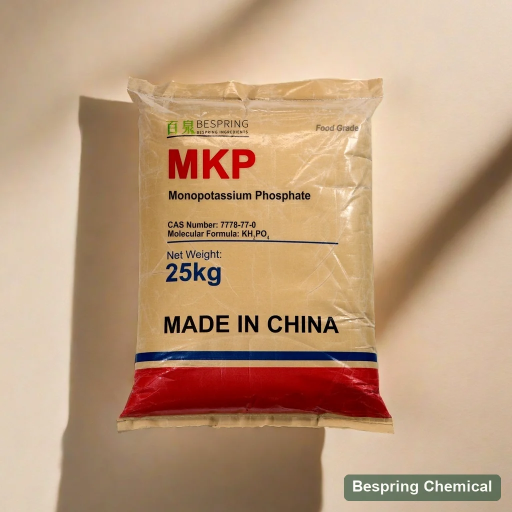
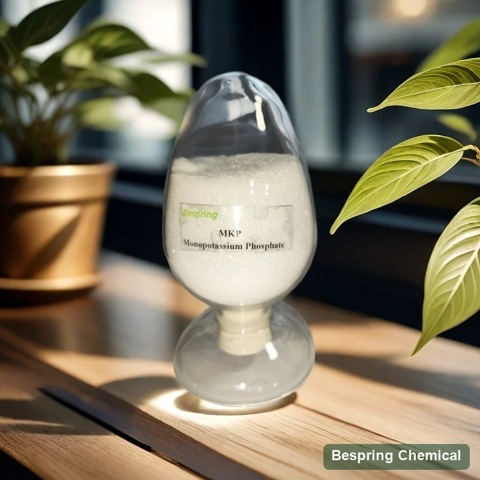
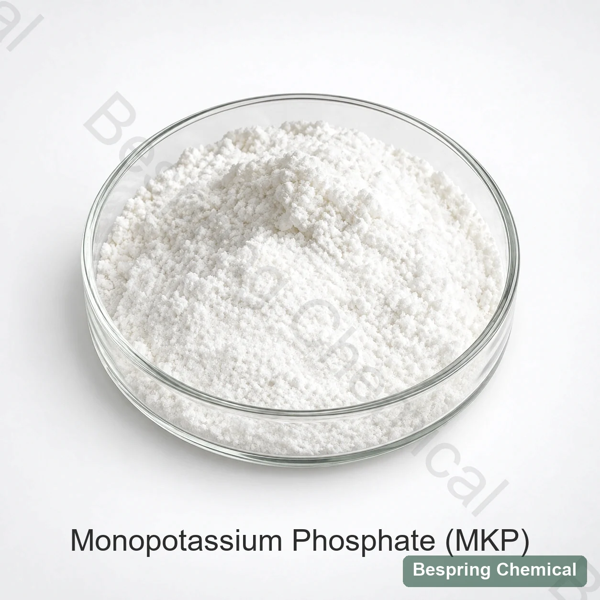

Food grade MKP E340(i)
- Food-additive identity and destination-market review
- Assay, pH, insolubles and elemental impurities
- Food-contact packing, traceability and applicable documents
- Performance in the actual food or fermentation system
Food grade acidic orthophosphate · E340(i) / INS 340(i)
Bespring supplies food grade monopotassium phosphate (MKP), also called potassium dihydrogen phosphate, for buffering and selected potassium/phosphate and food-fermentation applications. Confirm the food standard, dry-basis assay, impurity limits, physical form and destination market before ordering.
pH 4.2–4.7 is the JECFA 1 in 100 solution reference, not a published commercial guarantee. *Reconfirm current order terms, application and destination.

Product identity
Monopotassium phosphate (MKP), also called potassium dihydrogen phosphate or monobasic potassium phosphate, is the acidic potassium orthophosphate KH2PO4. JECFA identifies it as INS 340(i), CAS 7778-77-0, with buffer, neutralizing-agent, sequestrant and yeast-food functions.
JECFA describes it as freely soluble in water with a pH of 4.2–4.7 for a 1% solution. Its chemical formula contains no sodium. The offered grade’s sodium or other impurities require separate confirmation; any nutrition declaration must use supported composition data and the complete finished-food formula.
Identity, water solubility and functions: JECFA potassium dihydrogen phosphate specification. The formula here is KH₂PO₄ without water of crystallization; MKP is distinct from dipotassium phosphate and from a liquid solution with a specified concentration.
Food-grade qualification
The same chemical name and CAS appear in food and agricultural markets, but intended use, guaranteed analysis, impurity controls, manufacturing/packing scope and documentation are not interchangeable.
Receiving control: require the label, lot number, signed specification and COA to identify the food-grade supply. Do not approve material using an agricultural NPK certificate.
Application-specific screening
The following are formulation screening areas. Confirm the permitted food category and use conditions, then validate the offered grade under the actual mixing, processing and storage conditions. No fixed addition rate or performance improvement is specified.
Evaluate MKP when a soluble potassium/phosphate input and acidic buffer profile are required. Check reconstitution pH, mineral taste, clarity, sediment, compatibility with calcium/magnesium and declared nutrition.
Use as a candidate phosphate/potassium source and buffer only after defining organism, medium composition and target pH. Track growth, acidification, yield, by-products and downstream purification.
Calculate potassium and phosphorus from certified composition, then test particle-size compatibility, blend segregation, dissolution, caking, sensory impact and label limits.
MKP and DKP provide different phosphate species and potassium-to-phosphate ratios. A blend can be evaluated for a target buffer system; determine concentration and ratio from the complete formula and verify pH under the actual temperature and ionic conditions.
Commercial data with method boundaries
These commercial reference limits reproduce Bespring’s MKP product sheet, including the original loss-test label. They are not measured batch COA results or a guarantee of full JECFA conformity. Agree the current signed specification, sample basis and methods, then compare the shipment COA against that agreement.
On small screens, swipe the table to read all qualification notes.
| Test item | Unit | Commercial reference | Qualification note |
|---|---|---|---|
| KH2PO4 assay, dry basis | % | ≥98.0 | JECFA minimum is 98.0% after drying. Confirm the commercial drying conditions and assay method; nominally matching limits do not establish full conformity. |
| Fluoride (F) | mg/kg | ≤10 | JECFA maximum is 10 mg/kg as F. Confirm the analytical method and actual lot result. |
| Heavy metals (as Pb) | mg/kg | ≤10 | Aggregate “as Pb” field, not a separate lead test or proof of all-element compliance. |
| “Loss on ignition” | % | ≤0.5 | Source label retained. Temperature, duration and sample basis are not stated; do not equate ignition loss with drying loss. |
| Water-insoluble matter | % | ≤0.1 | Commercial limit is tighter than JECFA’s 0.2%. Confirm water-insoluble-matter method and sample basis. |
| Arsenic (As) | mg/kg | ≤3 | JECFA maximum is 3 mg/kg as As; confirm element-specific method and batch result. |
| Cadmium (Cd) | mg/kg | ≤1 | Commercial parameter; confirm destination requirements and method. |
| Mercury (Hg) | mg/kg | ≤1 | Commercial parameter; confirm destination requirements and method. |
| Lead (Pb) | mg/kg | ≤5 | The reference limit is higher than JECFA’s 4 mg/kg and cannot guarantee that requirement. |
Confirm lead control and loss-test methods: the commercial lead limit permits up to 5 mg/kg, while the cited JECFA monograph allows at most 4 mg/kg. A batch may test lower, but this reference limit cannot guarantee that requirement. Request an aligned signed specification and batch COA. JECFA uses loss on drying at 105°C for 4 h; the commercial “loss on ignition ≤0.5%” cannot establish that result without its method.
INS 340(i); assay ≥98% after drying; pH 4.2–4.7 (1%); loss on drying ≤2% at 105°C for 4 h; insolubles ≤0.2%; F ≤10, As ≤3 and Pb ≤4 mg/kg.
Review the JECFA MKP monographRequest the current specification/TDS, SDS, representative COA and actual batch COA. Define any required pH test, appearance/identity tests, particle distribution, dissolution/clarity and sodium/chloride/sulfate controls. Confirm shelf life and the availability, product/site scope and validity of requested certificates.
For mass-based reporting, 1 ppm equals 1 mg/kg and 0.001% equals 10 mg/kg. The FDA food-substance inventory identifies MKP and technical effects including pH control, nutrient supplementation and fermenting aid. An inventory listing is not approval of a Bespring grade or permission for every food. Verify the intended market’s specific use and labeling conditions.
Choose the phosphate species
Selection begins with target pH and ion contribution, not with the shared word “potassium.” Equal-weight substitution changes potassium, phosphorus and acid/base balance.
Acidic potassium orthophosphate
Use as a candidate where acidic phosphate buffering and potassium/phosphorus input are required. JECFA 1% pH: 4.2–4.7.
More alkaline potassium orthophosphate
Compare when a higher pH response or different potassium-to-phosphate ratio is required. A controlled MKP/DKP ratio can be evaluated as a buffer pair.
Acidulant without potassium input
Compare when acidification is the primary goal and added potassium is not desired. Handling, concentration and corrosion controls differ.
Application approval
Connect the exact food-grade source to solution behavior, mineral balance, process response and destination-market rules.
State the food or fermentation process, target pH, potassium/phosphorus contribution, total phosphate and mandatory label or impurity limits.
Match identity, food standard, impurity limits, methods and traceability to the current signed specification/TDS, SDS and representative COA; verify each delivered lot with its batch COA. Review certificates for the exact offered product/site and validity period.
Record water chemistry, temperature, concentration, ingredient order, dissolution time, clarity, sediment and measured pH.
For beverages or powders assess taste, clarity and stability; for cultures assess growth, acidification, yield and downstream effects under matched conditions.
Storage and handling
Appearance and warehouse references



Buyer questions
Yes. Monopotassium phosphate, potassium dihydrogen phosphate and monobasic potassium phosphate identify KH₂PO₄, CAS 7778-77-0, INS 340(i) / E340(i), with formula weight 136.09 g/mol. This page describes the solid salt without water of crystallization; confirm the offered physical form and food standard.
The name and formula can be shared, but fertilizer NPK analysis does not qualify material for food processing. Food-grade purchasing requires the applicable identity, impurity controls, traceability, food-contact packing and source documents. Use the separate agricultural page for plant-nutrition requirements.
No. The JECFA reference is pH 4.2–4.7 in a 1 in 100 solution. It is not a published commercial pH guarantee or a target for every food. The complete formula, concentration, temperature, water and mineral system determine the finished-product response.
No. The lead reference is ≤5 mg/kg versus the cited JECFA maximum of 4 mg/kg. A batch may test lower, but the commercial limit cannot guarantee that requirement. The loss-on-ignition method and other acceptance fields also need definition before full comparison.
No. Temperature, duration and sample treatment define the test. The commercial sheet lists loss on ignition ≤0.5% without a method; JECFA specifies loss on drying ≤2% at 105°C for 4 h. Do not rename the commercial test or infer free moisture from it.
No equal-weight replacement is proposed. MKP and DKP differ in potassium-to-phosphate ratio and acid/base behavior. Compare the required ion balance, measured pH, dissolution and process results before selecting either salt or a blend.
The commercial reference lists 25 kg bags, a minimum order of 500 kg and 23 metric tons per 20-foot full container. Reconfirm current order terms, pallet configuration and actual loading. Storage guidance is cool, dry and ventilated, not exceeding 30°C; confirm shelf life in the offered-grade document.
Provide food grade, required standard and destination, dry-basis assay and critical impurity limits, solid form/particle requirements, application and process, target pH and elemental K/P or equivalent reporting basis. Include quantity, packing, destination port, delivery terms/timing and the required specification/TDS, SDS, COA and certificates.
Reviewed 2026-10-05 · Identity/specification reference: FAO/WHO JECFA · Technical-effect context: US FDA inventory.
Related products and application guides
Compare a more alkaline potassium orthophosphate and potential MKP/DKP buffer pair.
Compare phosphate acidification when potassium input is not required.
Connect mineral and buffer selection with clarity, taste, pH and shelf-stability testing.
Use the separate agricultural page for 0-52-34, fertigation and crop-nutrition intent.
Specification-led sourcing
Identify the food-grade standard and mineral basis so the response is not confused with fertilizer MKP.